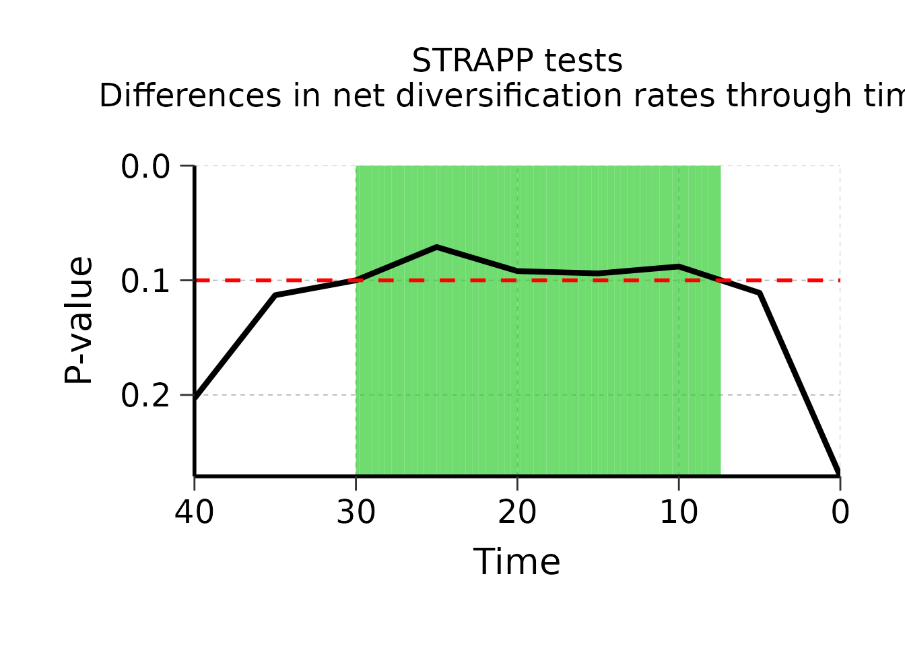
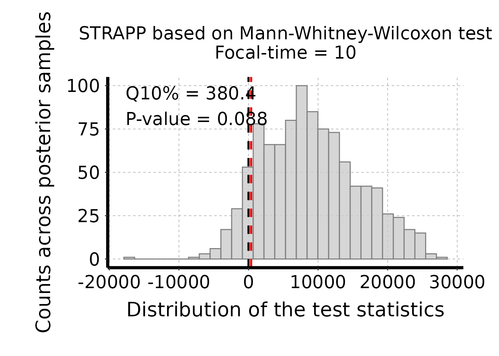
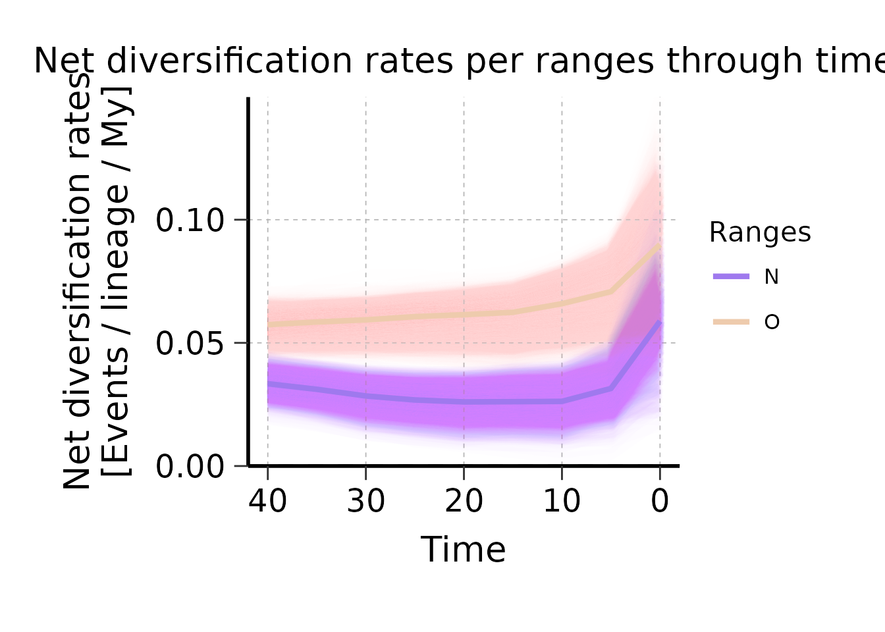
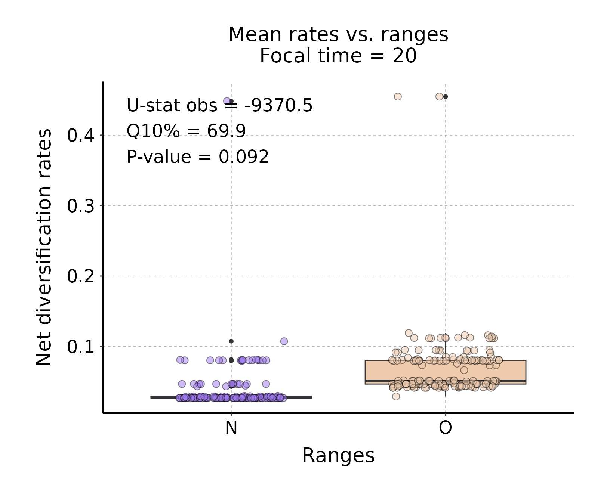
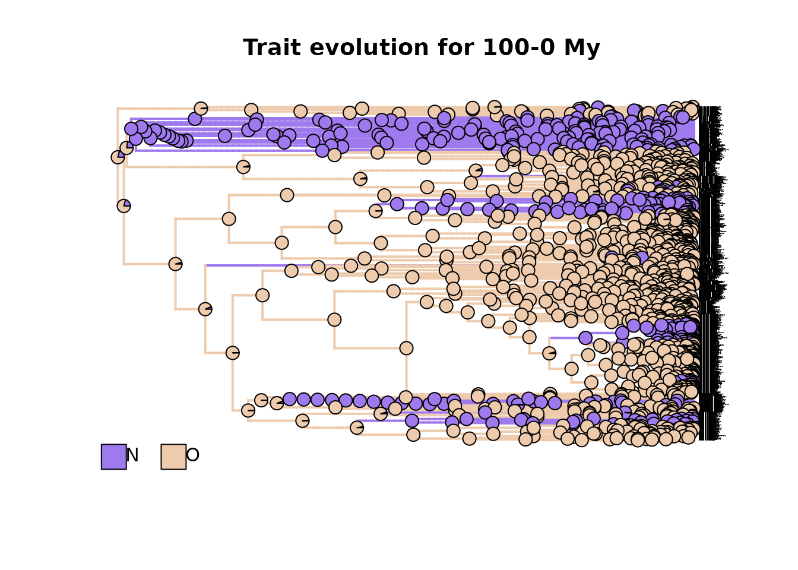
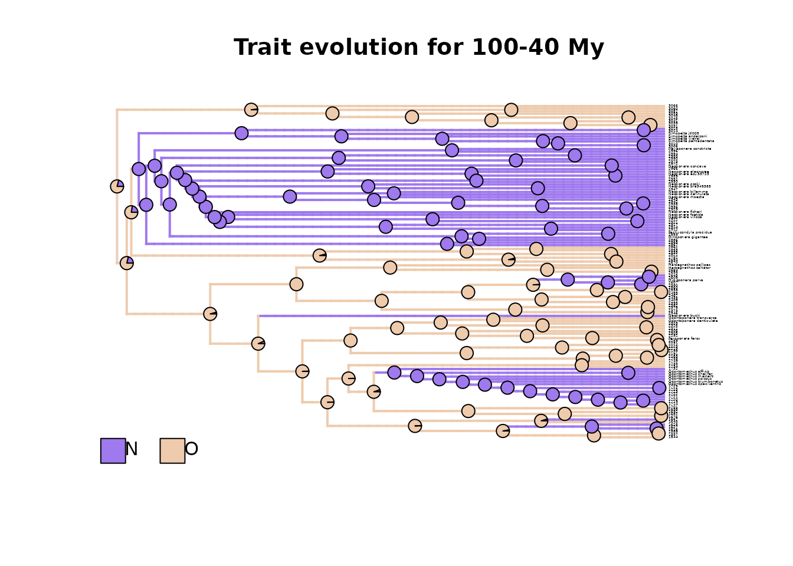
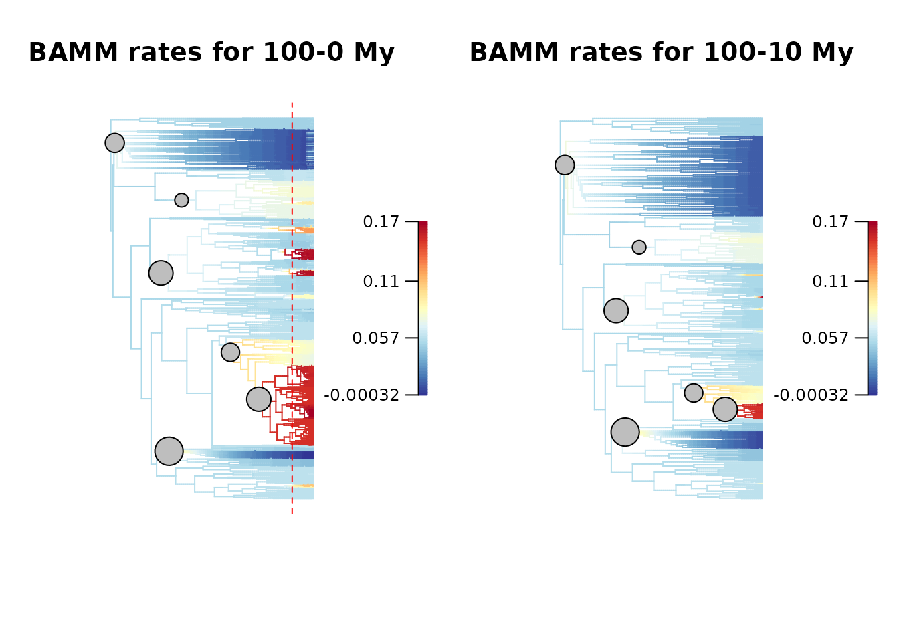
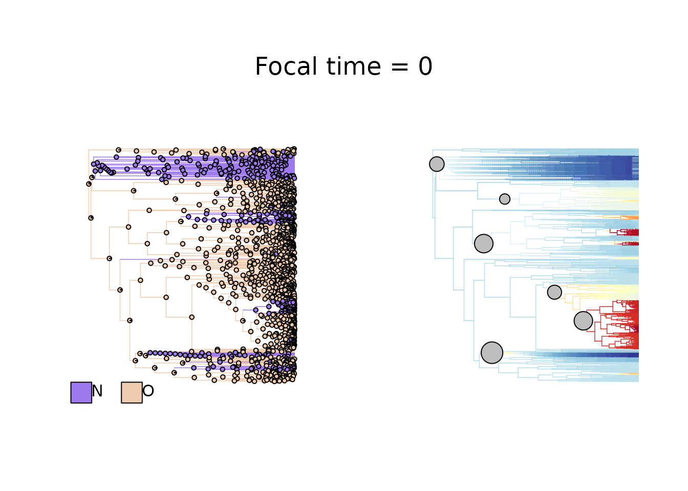
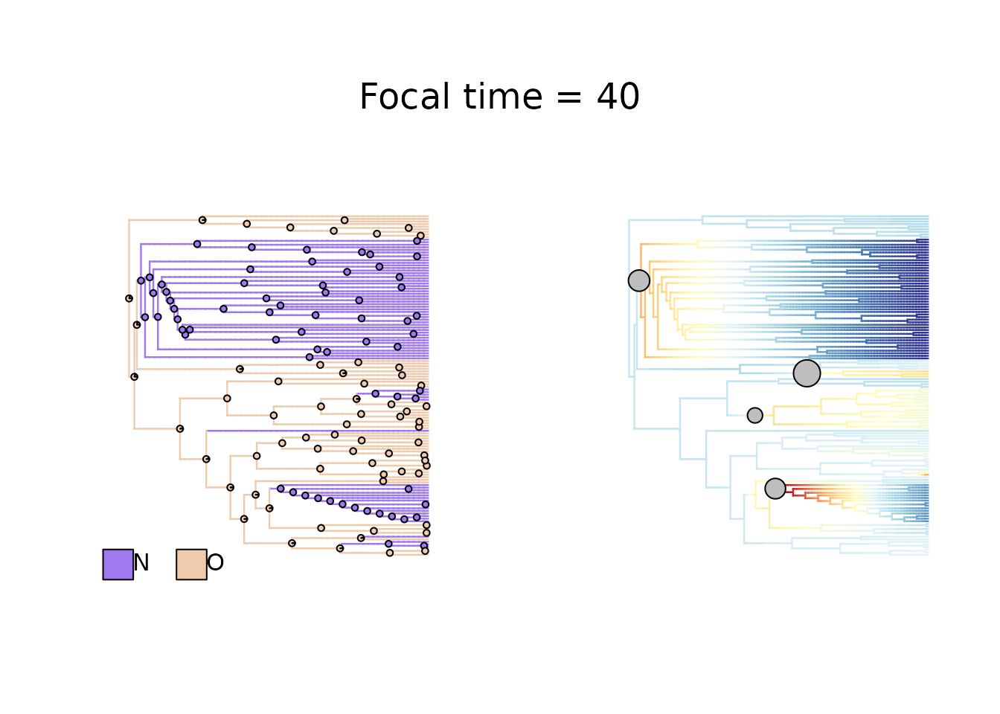

deepSTRAPP: Biogeographic range data
Source:vignettes/deepSTRAPP_biogeographic_data.Rmd
deepSTRAPP_biogeographic_data.Rmd
This is a simple example that shows how deepSTRAPP can be used
to test for differences in diversification rates
between two biogeographic areas. It presents the main
functions in a typical deepSTRAPP workflow.
For an example with binary data (2 levels),
please see the example in the Main tutorial:
vignette("main_tutorial").
For an example with categorical multinominal data,
see this vignette:
vignette("deepSTRAPP_categorical_3lvl_data").
For an example with continuous data, see this
vignette: vignette("deepSTRAPP_continuous_data").
Please note that the trait data and phylogeny calibration used
in this example are NOT valid biological data. They
were modified in order to provide results illustrating the usefulness of
deepSTRAPP.
# ------ Step 0: Load data ------ #
## Load range data
data(Ponerinae_binary_range_table, package = "deepSTRAPP")
dim(Ponerinae_binary_range_table)
View(Ponerinae_binary_range_table)
## Prepare range data for Old World vs. New World
# No overlap in ranges in current taxa
table(Ponerinae_binary_range_table$Old_World, Ponerinae_binary_range_table$New_World)
Ponerinae_NO_tip_data <- stats::setNames(object = Ponerinae_binary_range_table$Old_World,
nm = Ponerinae_binary_range_table$Taxa)
Ponerinae_NO_tip_data <- as.character(Ponerinae_NO_tip_data)
Ponerinae_NO_tip_data[Ponerinae_NO_tip_data == "TRUE"] <- "O" # O = Old World
Ponerinae_NO_tip_data[Ponerinae_NO_tip_data == "FALSE"] <- "N" # N = New World
names(Ponerinae_NO_tip_data) <- Ponerinae_binary_range_table$Taxa
table(Ponerinae_NO_tip_data)
# Select color scheme for ranges
colors_per_ranges <- c("mediumpurple2", "peachpuff2")
names(colors_per_ranges) <- c("N", "O")
## Load phylogeny
data(Ponerinae_tree_old_calib, package = "deepSTRAPP")
plot(Ponerinae_tree_old_calib)
ape::Ntip(Ponerinae_tree_old_calib) == length(Ponerinae_NO_tip_data)
## Check that trait data and phylogeny are named and ordered similarly
all(names(Ponerinae_NO_tip_data) == Ponerinae_tree_old_calib$tip.label)
## Reorder trait data as in phylogeny
Ponerinae_NO_tip_data <- Ponerinae_NO_tip_data[match(x = Ponerinae_tree_old_calib$tip.label,
table = names(Ponerinae_NO_tip_data))]
## Plot data on tips for visualization
pdf(file = "./Ponerinae_biogeo_data_old_calib_on_phylo.pdf", width = 20, height = 150)
# Set plotting parameters
par(mar = c(0.1,0.1,0.1,0.1), oma = c(0,0,0,0)) # bltr
# Graph presence/absence using plotTree.datamatrix
range_map <- phytools::plotTree.datamatrix(
tree = Ponerinae_tree_old_calib,
X = as.data.frame(Ponerinae_NO_tip_data),
fsize = 0.7, yexp = 1.1,
header = TRUE, xexp = 1.25,
colors = colors_per_ranges)
# Get plot info in "last_plot.phylo"
plot_info <- get("last_plot.phylo", envir=.PlotPhyloEnv)
# Add time line
# Extract root age
root_age <- max(phytools::nodeHeights(Ponerinae_tree_old_calib))
# Define ticks
# ticks_labels <- seq(from = 0, to = 100, by = 20)
ticks_labels <- seq(from = 0, to = 120, by = 20)
axis(side = 1, pos = 0, at = (-1 * ticks_labels) + root_age, labels = ticks_labels, cex.axis = 1.5)
legend(x = root_age/2,
y = 0 - 5, adj = 0,
bty = "n", legend = "", title = "Time [My]", title.cex = 1.5)
# Add a legend
legend(x = plot_info$x.lim[2] - 10,
y = mean(plot_info$y.lim),
# adj = c(0,0),
# x = "topleft",
legend = c("Absence", "Presence"),
pch = 22, pt.bg = c("white","gray30"), pt.cex = 1.8,
cex = 1.5, bty = "n")
dev.off()
## Inputs needed for Step 1 are the tip_data (Ponerinae_NO_tip_data) and the phylogeny
## (Ponerinae_tree_old_calib), and optionally, a color scheme (colors_per_ranges).
# ------ Step 1: Prepare trait data ------ #
## Goal: Map trait evolution on the time-calibrated phylogeny
# 1.1/ Fit evolutionary models to trait data using Maximum Likelihood.
# 1.2/ Select the best fitting model comparing AICc.
# 1.3/ Infer ancestral characters estimates (ACE) at nodes.
# 1.4/ Run stochastic mapping simulations to generate evolutionary histories
# compatible with the best model and inferred ACE. (Only for categorical and biogeographic data)
# 1.5/ Infer ancestral states along branches.
# - For continuous traits: use interpolation to produce a `contMap`.
# - For categorical and biogeographic data: compute posterior frequencies of each state/range
# to produce a `densityMap` for each state/range.
library(deepSTRAPP)
# All these actions are performed by a single function: deepSTRAPP::prepare_trait_data()
?deepSTRAPP::prepare_trait_data()
## In this example, to simplify the analyses, we set 'split_multi_area_ranges' = TRUE such as
## multi-range areas ('NO' in this case) are split between unique areas ('N' and 'O')
## to keep only two areas for downstream analyses
# Run prepare_trait_data with default options
# For biogeographic data, a DEC model is assumed by default.
Ponerinae_biogeo_data_old_calib <- prepare_trait_data(
tip_data = Ponerinae_NO_tip_data,
trait_data_type = "biogeographic",
phylo = Ponerinae_tree_old_calib,
evolutionary_models = "DEC+J", # Default = "DEC" for biogeographic
prefix_for_files = "Ponerinae_old_calib",
split_multi_area_ranges = TRUE, # Set to TRUE to split multi-range areas NO between N and O
nb_simulations = 100, # Reduce number of simulations to save time
colors_per_levels = colors_per_ranges,
seed = 1234) # Set seed for reproducibility
## Load Result to save time
data(Ponerinae_biogeo_data_old_calib, package = "deepSTRAPP")
# Explore output
str(Ponerinae_biogeo_data_old_calib, 1)
# $densityMaps hold maps for unique areas (Here, 'N' and 'O'), that will be used for downstream analyses.
# $densityMaps_all_ranges hold maps for unique areas AND multi-range areas (Here, also includes 'NO')
## Plot densityMaps for each range
# densityMap for range n°1 (N = "New World")
plot(Ponerinae_biogeo_data_old_calib$densityMaps[[1]])
# densityMap for range n°2 (N = "Old World")
plot(Ponerinae_biogeo_data_old_calib$densityMaps[[2]])
# densityMap for range n°3 (NO = "New World" + "Old World")
plot(Ponerinae_biogeo_data_old_calib$densityMaps_all_ranges[[3]])
## Plot densityMaps for all ranges together
# densityMaps with all unique areas overlaid
plot_densityMaps_overlay(Ponerinae_biogeo_data_old_calib$densityMaps)
# densityMaps with all ranges (including multi-area ranges) overlaid
plot_densityMaps_overlay(Ponerinae_biogeo_data_old_calib$densityMaps_all_ranges)
# As you can see, the probability of multi-range area 'NO' is significant only for deep nodes
# and is not likely to affect any of our downstream analyses if ignored.
## Inspect ancestral ranges at nodes
# Posterior probabilities of each range (= ACE) at internal nodes
Ponerinae_biogeo_data_old_calib$ace # Only with unique areas (Here, N and O)
Ponerinae_biogeo_data_old_calib$ace_all_ranges # Including multi-area ranges too (Here, NO)
## Inputs needed for Step 2 are the densityMaps (Ponerinae_densityMaps), and optionally,
## the tip_data (Ponerinae_NO_tip_data), and the ACE (Ponerinae_ACE)
# ------ Step 2: Prepare diversification data ------ #
## Goal: Map evolution of diversification rates and regime shifts on the time-calibrated phylogeny
# Run a BAMM (Bayesian Analysis of Macroevolutionary Mixtures)
# You need the BAMM C++ program installed in your machine to run this step.
# See the BAMM website: http://bamm-project.org/ and the companion R package [BAMMtools].
# 2.1/ Set BAMM - Record BAMM settings and generate all input files needed for BAMM.
# 2.2/ Run BAMM - Run BAMM and move output files in dedicated directory.
# 2.3/ Evaluate BAMM - Produce evaluation plots and ESS data.
# 2.4/ Import BAMM outputs - Load `BAMM_object` in R and subset posterior samples.
# 2.5/ Clean BAMM files - Remove files generated during the BAMM run.
# All these actions are performed by a single function: deepSTRAPP::prepare_diversification_data()
?deepSTRAPP::prepare_diversification_data()
# Run BAMM workflow with deepSTRAPP
## This step is time-consuming. You can skip it and load directly the result if needed
Ponerinae_BAMM_object <- prepare_diversification_data(
BAMM_install_directory_path = "./software/bamm-2.5.0/", # To adjust to your own path to BAMM
phylo = Ponerinae_tree_old_calib,
prefix_for_files = "Ponerinae_old_calib",
seed = 1234, # Set seed for reproducibility
numberOfGenerations = 10^7 # Set high for optimal run, but will take a long time
)
# Load directly the result
data(Ponerinae_BAMM_object_old_calib)
# Explore output
str(Ponerinae_BAMM_object_old_calib, 1)
# Record the regime shift events and macroevolutionary regimes parameters across posterior samples
str(Ponerinae_BAMM_object_old_calib$eventData, 1)
# Mean speciation rates at tips aggregated across all posterior samples
head(Ponerinae_BAMM_object_old_calib$meanTipLambda)
# Mean extinction rates at tips aggregated across all posterior samples
head(Ponerinae_BAMM_object_old_calib$meanTipMu)
# Plot mean net diversification rates and regime shifts on the phylogeny
plot_BAMM_rates(Ponerinae_BAMM_object_old_calib,
labels = FALSE, legend = TRUE)
## Input needed for Step 3 is the BAMM_object (Ponerinae_BAMM_object)
# ------ Step 3: Run a deepSTRAPP workflow ------ #
## Goal: Extract traits, diversification rates and regimes at a given time in the past
## to test for differences with a STRAPP test
# 3.1/ Extract trait data at a given time in the past ('focal_time')
# 3.2/ Extract diversification rates and regimes at a given time in the past ('focal_time')
# 3.3/ Compute STRAPP test
# 3.4/ Repeat previous actions for many timesteps along evolutionary time
# All these actions are performed by a single function:
# For a single 'focal_time': deepSTRAPP::run_deepSTRAPP_for_focal_time()
# For multiple 'time_steps': deepSTRAPP::run_deepSTRAPP_over_time()
?deepSTRAPP::run_deepSTRAPP_for_focal_time()
?deepSTRAPP::run_deepSTRAPP_over_time()
## Set for five time steps of 5 My. Will generate deepSTRAPP workflows for 0 to 40 Mya.
time_step_duration <- 5
time_range <- c(0, 40)
# Run deepSTRAPP on net diversification rates
## This step is time-consuming. You can skip it and load directly the result if needed
Ponerinae_deepSTRAPP_biogeo_old_calib_0_40 <- run_deepSTRAPP_over_time(
densityMaps = Ponerinae_biogeo_data_old_calib$densityMaps,
ace = Ponerinae_biogeo_data_old_calib$ace,
tip_data = Ponerinae_NO_tip_data,
trait_data_type = "biogeographic",
BAMM_object = Ponerinae_BAMM_object_old_calib,
time_range = time_range,
time_step_duration = time_step_duration,
seed = 1234, # Set seed for reproducibility
alpha = 0.10, # Select a generous level of significance for the sake of the example
# Needed to obtain STRAPP stats and plot evaluation histograms (See 4.2)
return_perm_data = TRUE,
# Needed to get trait data and plot rates through time (See 4.3)
extract_trait_data_melted_df = TRUE,
# Needed to get diversification data and plot rates through time (See 4.3)
extract_diversification_data_melted_df = TRUE,
# Needed to obtain STRAPP stats and plot evaluation histograms (See 4.2)
return_STRAPP_results = TRUE,
# Needed to plot updated densityMaps (See 4.4)
return_updated_trait_data_with_Map = TRUE,
# Needed to map diversification rates on updated phylogenies (See 4.5)
return_updated_BAMM_object = TRUE,
verbose = TRUE,
verbose_extended = TRUE)
# Load the deepSTRAPP output summarizing results for 0 to 40 My
data(Ponerinae_deepSTRAPP_biogeo_old_calib_0_40, package = "deepSTRAPP")
## Explore output
str(Ponerinae_deepSTRAPP_biogeo_old_calib_0_40, max.level = 1)
# See next step for how to generate plots from those outputs
# Display test summary
# Can be passed down to [deepSTRAPP::plot_STRAPP_pvalues_over_time()] to generate a plot
# showing the evolution of the test results across time
Ponerinae_deepSTRAPP_biogeo_old_calib_0_40$pvalues_summary_df
# Access STRAPP test results
# Can be passed down to [deepSTRAPP::plot_histograms_STRAPP_tests_over_time()] to generate plot
# showing the null distribution of the test statistics
str(Ponerinae_deepSTRAPP_biogeo_old_calib_0_40$STRAPP_results, max.level = 2)
# Access trait data in a melted data.frame
head(Ponerinae_deepSTRAPP_biogeo_old_calib_0_40$trait_data_df_over_time)
# Access the diversification data in a melted data.frame
head(Ponerinae_deepSTRAPP_biogeo_old_calib_0_40$diversification_data_df_over_time)
# Both can be passed down to [deepSTRAPP::plot_rates_through_time()] to generate a plot
# showing the evolution of diversification rates though time in relation to trait values
# Access updated densityMaps for each focal time
# Can be used to plot densityMaps with branch cut-off at focal time
# with [deepSTRAPP::plot_densityMaps_overlay()]
str(Ponerinae_deepSTRAPP_biogeo_old_calib_0_40$updated_trait_data_with_Map_over_time, max.level = 2)
# Access updated BAMM_object for each focal time
# Can be used to map rates and regime shifts on phylogeny with branch cut-off
# at focal time with [deepSTRAPP::plot_BAMM_rates()]
str(Ponerinae_deepSTRAPP_biogeo_old_calib_0_40$updated_BAMM_objects_over_time, max.level = 2)
## Input needed for Step 4 is the deepSTRAPP object (Ponerinae_deepSTRAPP_biogeo_old_calib_0_40)
# ------ Step 4: Plot results ------ #
## Goal: Summarize the outputs in meaningful plots
# 4.1/ Plot evolution of STRAPP tests p-values through time
# 4.2/ Plot histogram of STRAPP test stats
# 4.3/ Plot evolution of rates though time in relation to ranges
# 4.4/ Plot rates vs. ranges across branches for a given 'focal_time'
# 4.5/ Plot updated densityMaps mapping range evolution for a given 'focal_time'
# 4.6/ Plot updated diversification rates and regimes for a given 'focal_time'
# 4.7/ Combine 4.5 and 4.6 to plot both mapped phylogenies with range evolution (4.5)
# and diversification rates and regimes (4.6).
# Each plot is achieve through a dedicated function
# Load the deepSTRAPP output summarizing results for 0 to 40 My
data(Ponerinae_deepSTRAPP_biogeo_old_calib_0_40, package = "deepSTRAPP")
### 4.1/ Plot evolution of STRAPP tests p-values through time ####
# ?deepSTRAPP::plot_STRAPP_pvalues_over_time()
## Plot results of Mann-Whitney-Wilcoxon tests across all time-steps
deepSTRAPP::plot_STRAPP_pvalues_over_time(
deepSTRAPP_outputs = Ponerinae_deepSTRAPP_biogeo_old_calib_0_40,
alpha = 0.1)
# This is the main output of deepSTRAPP. It shows the evolution of the significance
# of the STRAPP tests over time.
# This example highlights the importance of deepSTRAPP as the significance
# of STRAPP tests change over time.
# Differences in net diversification rates are not significant in the present
# (assuming a significant threshold of alpha = 0.10).
# Meanwhile, rates are significantly different in the past between 8 My to 30 My (the green area).
# This result supports the idea that differences in biodiversity across bioregions
# (i.e., "Old World" vs. "New World" ants) can be explained by differences of diversification rates
# that was detected in the past.
# Without deepSTRAPP, this conclusion would not have been supported by current diversification rates
# alone (although here, results should be discussed is regards to their weak degree of significance).
### 4.2/ Plot histogram of STRAPP test stats ####
# Plot an histogram of the distribution of the test statistics used
# to assess the significance of STRAPP tests
# For a single 'focal_time': deepSTRAPP::plot_histogram_STRAPP_test_for_focal_time()
# For multiple 'time_steps': deepSTRAPP::plot_histograms_STRAPP_tests_over_time()
# ?deepSTRAPP::plot_histogram_STRAPP_test_for_focal_time
# ?deepSTRAPP::plot_histograms_STRAPP_tests_over_time
## These functions are used to provide visual illustration of the results of each STRAPP test.
# They can be used to complement the provision of the statistical results summarized in Step 3.
# Display the time-steps
Ponerinae_deepSTRAPP_biogeo_old_calib_0_40$time_steps
## Plot results from Mann-Whitney-Wilcoxon between the two unique areas ####
# Plot the histogram of test stats for time-step n°3 = 10 My
plot_histogram_STRAPP_test_for_focal_time(
deepSTRAPP_outputs = Ponerinae_deepSTRAPP_biogeo_old_calib_0_40,
focal_time = 10)
# The black line represents the expected value under the null hypothesis H0
# => Δ Mann-Whitney-Wilcoxon U-stat = 0.
# The histogram shows the distribution of the test statistics as observed
# across the 1000 posterior samples from BAMM.
# The red line represents the significance threshold for which 90% of the observed data
# exhibited a higher value that expected.
# Since this red line is above the null expectation (quantile 10% = 380.4),
# the test is significant for a value of alpha = 0.10.
# Plot the histograms of test stats for all time-steps
plot_histograms_STRAPP_tests_over_time(
deepSTRAPP_outputs = Ponerinae_deepSTRAPP_biogeo_old_calib_0_40)
### 4.3/ Plot evolution of rates through time ~ trait data ####
# ?deepSTRAPP::plot_rates_through_time()
# Generate ggplot
plot_rates_through_time(deepSTRAPP_outputs = Ponerinae_deepSTRAPP_biogeo_old_calib_0_40,
colors_per_levels = colors_per_ranges,
plot_CI = TRUE)
# This plot helps to visualize how differences in rates evolved over time.
# You can see that both bioregions "New World" and "Old World" had fairly different rates over time,
# with differences detected as significant between 10 to 30 My.
# However, in the present, we recorded an increase in diversification rates that blurred
# these differences and led to a non-significant STRAPP test when comparing current rates.
# This plot, alongside results of deepSTRAPP, supports the Diversification Rate Hypothesis
# in showing how "Old World" ant lineages may have accumulated faster, especially between 10 to 30 My.
# N.B.: The increase of diversification rates recorded in the present may largely be artifactual,
# due to the fact some lineages in the present will go extinct in the future,
# but have not been recorded as such.
# This bias is named the "pull of the present", and can impair evaluation of
# the Diversification Rate Hypothesis based only on current rates.
# deepSTRAPP offers a solution to this issue by investigating rate differences at any time in the past.
### 4.4/ Plot rates vs. ranges across branches for a given focal time ####
# ?deepSTRAPP::plot_rates_vs_trait_data_for_focal_time()
# ?deepSTRAPP::plot_rates_vs_trait_data_over_time()
# This plot help to visualize differences in rates vs. ranges across all branches
# found at specific time-steps (i.e., 'focal_time').
# Generate ggplot for time = 20 My
plot_rates_vs_trait_data_for_focal_time(
deepSTRAPP_outputs = Ponerinae_deepSTRAPP_biogeo_old_calib_0_40,
focal_time = 20,
colors_per_levels = colors_per_ranges)
# Here we focus on T = 20 My to highlight the differences detected in the previous steps.
# You can see that "Old World" ants tend to have higher rates than "New World" ants, at this time-step.
# This plot, alongside other results of deepSTRAPP, supports the Diversification Rate Hypothesis in showing
# "Old World" ant lineages may have accumulated faster, especially between 10 to 30 My.
# Plot rates vs. ranges for all time-steps
plot_rates_vs_trait_data_over_time(
deepSTRAPP_outputs = Ponerinae_deepSTRAPP_biogeo_old_calib_0_40,
colors_per_levels = colors_per_ranges)
### 4.5/ Plot updated densityMaps mapping trait evolution for a given 'focal_time' ####
# ?deepSTRAPP::plot_densityMaps_overlay()
## These plots help to visualize the evolution of trait data across the phylogeny,
## and to focus on tip values at specific time-steps.
# Display the time-steps
Ponerinae_deepSTRAPP_biogeo_old_calib_0_40$time_steps
## The next plot shows the evolution of trait data across the whole phylogeny (100-0 My).
# Plot initial densityMaps (t = 0)
densityMaps_0My <- Ponerinae_deepSTRAPP_biogeo_old_calib_0_40$updated_trait_data_with_Map_over_time[[1]]
plot_densityMaps_overlay(densityMaps_0My$densityMaps,
colors_per_levels = colors_per_ranges,
fsize = 0.1) # Reduce tip label size
title(main = "Trait evolution for 100-0 My")
## The next plot shows the evolution of trait data from root to 10 Mya (100-10 My).
# Plot updated densityMaps for time-step n°3 = 10 My
densityMaps_10My <- Ponerinae_deepSTRAPP_biogeo_old_calib_0_40$updated_trait_data_with_Map_over_time[[3]]
plot_densityMaps_overlay(densityMaps_10My$densityMaps,
colors_per_levels = colors_per_ranges,
fsize = 0.1) # Reduce tip label size
title(main = "Trait evolution for 100-10 My")
## The next plot shows the evolution of trait data from root to 40 Mya (100-40 My).
# Plot updated densityMaps for time-step n°9 = 40 My
densityMaps_40My <- Ponerinae_deepSTRAPP_biogeo_old_calib_0_40$updated_trait_data_with_Map_over_time[[9]]
plot_densityMaps_overlay(densityMaps_40My$densityMaps,
colors_per_levels = colors_per_ranges,
fsize = 0.2) # Reduce tip label size
title(main = "Trait evolution for 100-40 My")

### 4.6/ Plot updated diversification rates and regimes for a given 'focal_time' ####
# ?deepSTRAPP::plot_BAMM_rates()
## These plots help to visualize the evolution of diversification rates across the phylogeny,
## and to focus on tip values at specific time-steps.
# Display the time-steps
Ponerinae_deepSTRAPP_biogeo_old_calib_0_40$time_steps
# Extract root age
root_age <- max(phytools::nodeHeights(Ponerinae_tree_old_calib)[,2])
## The next plot shows the evolution of net diversification rates across the whole phylogeny (100-0 My).
# Plot diversification rates on initial phylogeny (t = 0)
BAMM_map_0My <- Ponerinae_deepSTRAPP_biogeo_old_calib_0_40$updated_BAMM_objects_over_time[[1]]
plot_BAMM_rates(BAMM_map_0My, labels = FALSE, par.reset = FALSE)
abline(v = root_age - 10, col = "red", lty = 2) # Show where the phylogeny will be cut for t = 10My
abline(v = root_age - 40, col = "red", lty = 2) # Show where the phylogeny will be cut for t = 40My
title(main = "BAMM rates for 100-0 My")
## The next plot shows the evolution of net diversification rates from root to 10 Mya (100-10 My).
# Plot diversification rates on updated phylogeny for time-step n°3 = 10 My
BAMM_map_10My <- Ponerinae_deepSTRAPP_biogeo_old_calib_0_40$updated_BAMM_objects_over_time[[3]]
plot_BAMM_rates(BAMM_map_10My, labels = FALSE,
colorbreaks = BAMM_map_10My$initial_colorbreaks$net_diversification)
title(main = "BAMM rates for 100-10 My")
## The next plot shows the evolution of net diversification rates from root to 40 Mya (100-40 My).
# Plot diversification rates on updated phylogeny for time-step n°9 = 40 My
BAMM_map_40My <- Ponerinae_deepSTRAPP_biogeo_old_calib_0_40$updated_BAMM_objects_over_time[[9]]
plot_BAMM_rates(BAMM_map_40My, labels = FALSE,
colorbreaks = BAMM_map_40My$initial_colorbreaks$net_diversification)
title(main = "BAMM rates for 100-40 My")
### 4.7/ Plot both trait evolution and diversification rates and regimes updated for a given 'focal_time' ####
# ?deepSTRAPP::plot_traits_vs_rates_on_phylogeny_for_focal_time()
## These plots help to visualize simultaneously the evolution of trait and diversification rates
# across the phylogeny, and to focus on tip values at specific time-steps.
# Display the time-steps
Ponerinae_deepSTRAPP_biogeo_old_calib_0_40$time_steps
## The next plot shows the evolution of ranges and rates across the whole phylogeny (100-0 My).
# Plot both mapped phylogenies in the present (t = 0)
plot_traits_vs_rates_on_phylogeny_for_focal_time(
deepSTRAPP_outputs = Ponerinae_deepSTRAPP_biogeo_old_calib_0_40,
focal_time = 0,
ftype = "off", lwd = 0.7,
colors_per_levels = colors_per_ranges,
labels = FALSE, legend = FALSE,
par.reset = FALSE)
## The next plot shows the evolution of ranges and rates from root to 10 Mya (100-10 My).
# Plot both mapped phylogenies for time-step n°3 = 10 My
plot_traits_vs_rates_on_phylogeny_for_focal_time(
deepSTRAPP_outputs = Ponerinae_deepSTRAPP_biogeo_old_calib_0_40,
focal_time = 10,
ftype = "off", lwd = 1.2,
colors_per_levels = colors_per_ranges,
labels = FALSE, legend = FALSE,
par.reset = FALSE)
## The next plot shows the evolution of ranges and rates from root to 40 Mya (100-40 My).
# Plot both mapped phylogenies for time-step n°9 = 40 My
plot_traits_vs_rates_on_phylogeny_for_focal_time(
deepSTRAPP_outputs = Ponerinae_deepSTRAPP_biogeo_old_calib_0_40,
focal_time = 40,
ftype = "off", lwd = 1.2,
colors_per_levels = colors_per_ranges,
labels = FALSE, legend = FALSE,
par.reset = FALSE)
